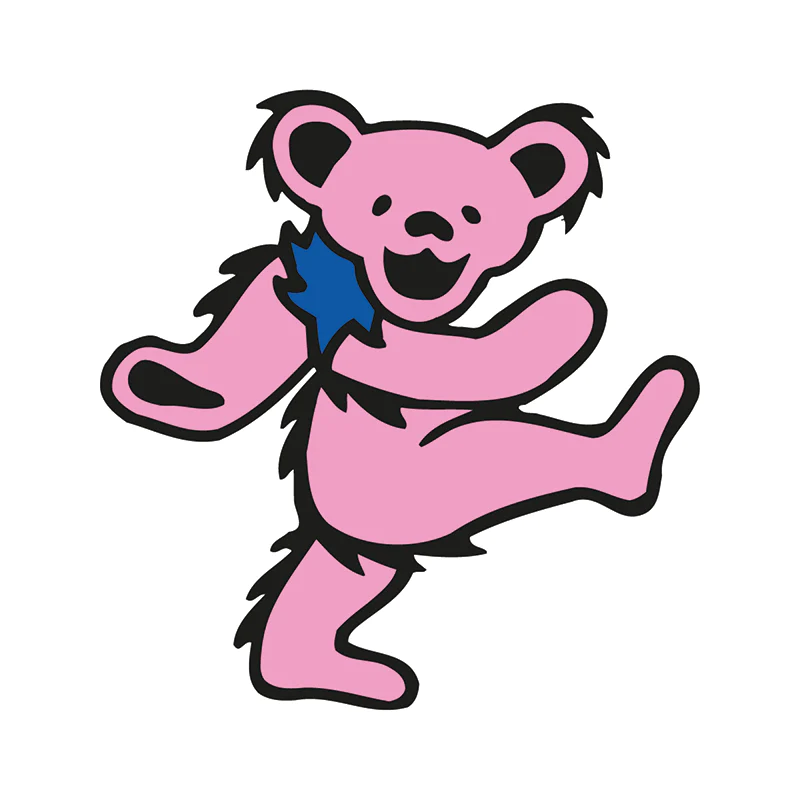

YADD: Yet Another Dead Database
History of the Band

The Grateful Dead was an American rock band formed in 1965 in Palo Alto, California. The band is
known for its eclectic style, which fused elements of rock, folk, country, jazz, bluegrass, blues, rock
and roll, gospel, reggae, world music, and psychedelia; for live performances of lengthy instrumental
jams that typically incorporated modal and tonal improvisation; and for its devoted fan base,
known as "Deadheads". "Their music", writes Lenny Kaye, "touches on ground that most other groups don't
even know exists." These various influences were distilled into a diverse and psychedelic whole that
made the Grateful Dead "the pioneering Godfathers of the jam band world". The band was ranked 57th by
Rolling Stone magazine in its "The Greatest Artists of All Time" issue. The band was inducted into the
Rock and Roll Hall of Fame in 1994 and a recording of their May 8, 1977 performance at Cornell
University's Barton Hall was added to the National Recording Registry of the Library of Congress in 2012.
Despite having only one top-40 single in their 30-year career, "Touch of Grey", the Grateful Dead remained
among the highest grossing American touring acts for multiple decades and gained a committed fanbase by
word of mouth and the exchange of live recordings due to the band's permissive stance on taping.
The
Grateful Dead was founded in the San Francisco Bay Area amid the rise of the counterculture of the 1960s.
The founding members were Jerry Garcia (lead guitar, vocals), Bob Weir (rhythm guitar, vocals), Ron
"Pigpen" McKernan (keyboards, harmonica, vocals), Phil Lesh (bass, vocals), and Bill Kreutzmann (drums).
Members of the Grateful Dead, originally known as the Warlocks, had played together in various Bay Area
ensembles, including the traditional jug band Mother McCree's Uptown Jug Champions. Lesh was the last
member to join the Warlocks before they changed their name to the Grateful Dead; replacing Dana Morgan Jr.
, who had played bass for a few gigs. Drummer Mickey Hart and non-performing lyricist Robert Hunter
joined in 1967. With the exception of McKernan, who died in 1973, and Hart, who took time off from 1971
to 1974, the core of the band stayed together for its entire 30-year history. The other official members
of the band are Tom Constanten (keyboards; 1968–1970), John Perry Barlow (non-performing lyricist;
1971–1995), Keith Godchaux (keyboards, occasional vocals; 1971–1979), Donna Godchaux (vocals; 1972–1979),
Brent Mydland (keyboards, vocals; 1979–1990), and Vince Welnick (keyboards, vocals; 1990–1995). Bruce
Hornsby (accordion, piano, vocals) was a touring member from 1990 to 1992, as well as a guest with the
band on occasion before and after the tours.
After the death of Garcia in 1995, former members of the band, along with other musicians, toured as the
Other Ones in 1998, 2000, and 2002, and the Dead in 2003, 2004, and 2009. In 2015, the four surviving
core members marked the band's 50th anniversary in a series of concerts that were billed as their last
performances together. There have also been several spin-offs featuring one or more core members, such
as Dead & Company, Furthur, the Rhythm Devils, Phil Lesh and Friends, RatDog, and Billy & the Kids.